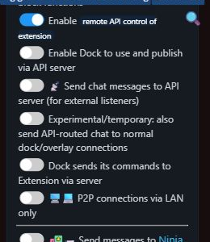

เรียนรู้การตั้งค่า ปรับแต่ง และใช้ Social Stream Ninja ให้เต็มประสิทธิภาพ
รหัสเซสชันเดียวเชื่อมทุกอย่าง ใช้ค่าเดียวกันสำหรับ ?session= ค่าใน URL แผงด็อกและโอเวอร์เลย์ของคุณ
ค้นหาหรือเปิดหนึ่งหมวด เริ่มด้วย OBS หากต้องการเพียงแชตบนหน้าจอ
ไม่พบคู่มือที่ตรงกัน
ก่อนใช้ Social Stream Ninja ต้องติดตั้งก่อน มีหลายวิธีติดตั้งส่วนขยายเบราว์เซอร์:
สำหรับวิธีติดตั้งแบบละเอียด ดู หน้าดาวน์โหลด.
เมื่อติดตั้งแล้ว ทำตามขั้นตอนเพื่อเริ่มใช้ Social Stream Ninja:
หมายเหตุ: เพื่อประสบการณ์ดีที่สุด ให้หน้าต่างแชตมองเห็นอยู่ (ไม่ย่อ) เมื่อใช้ส่วนขยายเบราว์เซอร์
Social Stream Ninja ใช้กับกว่า 100 แพลตฟอร์มได้ วิธีเชื่อมต่อแพลตฟอร์มยอดนิยมมีดังนี้:
ปรับได้ทั้งแดชบอร์ดและโอเวอร์เลย์ด้วยการเพิ่มพารามิเตอร์ใน URL ตัวอย่าง:
&darkmode - เปิดโหมดมืดสำหรับแดชบอร์ด&scale=2 - เพิ่มขนาด/ความละเอียดทุกองค์ประกอบเป็นสองเท่า&hidesource - ซ่อนไอคอนแพลตฟอร์ม (YouTube, Twitch ฯลฯ)&compact - ลบช่องว่างระหว่างชื่อกับข้อความ&inline - วางข้อความต่อข้างชื่อโดยคงระยะห่างปกติ&autoshow - นำข้อความมาแสดงเด่นอัตโนมัติเมื่อเข้ามา (ประมาณ 2 ข้อความต่อ 3 วินาที)
&showtime=20000 - ซ่อนข้อความที่เลือกอัตโนมัติหลัง 20 วินาที&showsource - แสดงไอคอนแพลตฟอร์มข้างชื่อผู้ใช้&fade - ทำให้ข้อความเด่นค่อย ๆ ปรากฏแทนโผล่ทันที&swipe - ทำให้ข้อความเด่นเลื่อนเข้าจากซ้าย¢er - จัดข้อความเด่นไว้กึ่งกลางจอ
เพื่อจัดการ URL ง่ายขึ้น ลอง เครื่องมือแก้ไขพารามิเตอร์ URL.
ปรับหน้าตาด้วย CSS ได้หลายวิธี:
ใน OBS คุณเพิ่ม CSS กำหนดเองให้แหล่งเบราว์เซอร์ได้:
body { background-color: rgba(0, 0, 0, 0); margin: 0px auto; overflow: hidden; }
:root {
--comment-color: #090;
--comment-bg-color: #DDD;
--comment-border-radius: 10px;
--comment-font-size: 30px;
--author-border-radius: 10px;
--author-bg-color: #FF0000;
--author-avatar-border-color: #FF0000;
--author-font-size: 32px;
--author-color: blue;
--font-family: "Arial", sans-serif;
}
.hl-name {
padding: 2px 10px !important;
}
เพิ่ม CSS โดยตรงผ่านเมนูส่วนขยาย:
เลือกเทมเพลตตกแต่งสำเร็จที่มี CSS ในตัว:
YOURSESSIONID ใน URL เทมเพลตด้วยรหัสเซสชันของคุณตัวอย่าง: https://socialstream.ninja/themes/pretty.html?session=YOURSESSIONID
สีชื่อต้องตั้งสองส่วน: แหล่งสีทั่วไปใน ข้อความ - รูปแบบ (Message - Styling) และสวิตช์แสดงผลแผงด็อกใน ข้อความ - การมองเห็น (Message - Visibility).
เปิดคู่มือสีชื่อแชต สำหรับภาพหน้าจอ ตัวเลือกสี การแก้ปัญหา และตัวอย่าง CSS
นำฟอนต์ของคุณเองมาใช้กับ dock.html หรือ featured.html โดยไม่พึ่งฟอนต์ Google/ระบบ
@font-face.&css=, &b64css=, &font=, หรือ &googlefont=.เปิดคู่มือฟอนต์ที่โฮสต์เอง สำหรับวิธีโฮสต์ทีละขั้นและตัวอย่าง CSS
Social Stream Ninja อ่านข้อความแชตออกเสียงได้ด้วยเทคโนโลยี Text-to-Speech:
&speech=en-US ลงใน URL featured.html หรือ dock.html&pipervoice=pt_BR-faber-medium หรือ eSpeak &espeakvoice=pt-br, ส่วนภาษาสเปนใช้ Piper ได้ &pipervoice=es_ES-davefx-medium หรือ eSpeak &espeakvoice=es.&pitch=1&volume=1&rate=1&ttsprovider=kokoro&ttsprovider=piper&espeakvoice=pt-br และภาษาสเปน &espeakvoice=es&ttsprovider=kitten&ttsprovider=openai&openaiendpoint=http://localhost:8880/v1/audio/speechต้องการให้ทำงานในเครื่องและเป็นส่วนตัวหรือไม่? ดู คู่มือ AI TTS ในเครื่อง สำหรับวิธีตั้งค่าครบถ้วน รวมเซิร์ฟเวอร์ที่โฮสต์เองและการจับเสียง OBS
Social Stream Ninja ใช้ AI ได้หลายแบบ เลือกขั้นตอนงานก่อนเลือกผู้ให้บริการ
chatgpt.com แท็บที่เปิดอยู่โดยไม่ใช้คีย์ APIจัดรูปแบบการปรากฏของข้อความในโอเวอร์เลย์:
จับอีเวนต์ที่ไม่ใช่แชต เช่น ผู้ติดตามใหม่ สมัครสมาชิก เรด และการบริจาคจากแพลตฟอร์มสตรีม
หมายเหตุ: อีเวนต์แบบบริจาค (Super Chats, Bits, Tips) ส่งต่ออัตโนมัติไม่ว่าสวิตช์นี้เป็นค่าใด สวิตช์มีไว้หลัก ๆ สำหรับแจ้งเตือนผู้ติดตาม/สมาชิก
ดูรายการข้อมูลอีเวนต์และช่องข้อมูลทั้งหมดได้ใน เอกสารอ้างอิงอีเวนต์ เอกสาร
แสดงความคืบหน้า Twitch Hype Train และ Treasure Train เป็นแถบด้านบนสไตล์ Twitch ใน OBS
ไฮไลต์ผู้แชตใหม่ เพิ่มตราใบไม้ได้ หรือใช้เสียงแผงด็อกเฉพาะครั้งแรก
ตัวแก้ไข Event Flow เป็นระบบอัตโนมัติแบบโหนดสำหรับสร้างขั้นตอนงานกำหนดเอง เป็นชั้น "ระบบอัตโนมัติขั้นสูง" ที่ให้คุณเขียนตรรกะกำหนดเส้นทางเอง
เพื่อให้เสียง โอเวอร์เลย์สื่อ และการกระทำ OBS ทำงาน ต้องเพิ่มหน้า Flow Actions เป็นแหล่งเบราว์เซอร์ใน OBS:
สำคัญ: การกระทำ Relay Chat ปัจจุบันข้ามข้อความสะท้อนกลับที่ตรวจพบอัตโนมัติ ใช้ ตัวกรองข้อความสะท้อนกลับ (Reflection Filter) โหนดเพื่อควบคุมว่าข้อความสะท้อนที่จับกลับมาจะแสดงในแผงด็อกและโอเวอร์เลย์หรือไม่ ดู คำแนะนำส่งต่อแชต สำหรับตั้งค่า ดูเอกสารแบบละเอียดได้ใน คู่มือ Event Flow สำหรับเสียงหรือสื่อรางวัล Kick ใช้ คู่มือแต้มช่อง / รางวัล Kick.
ควบคุม Social Stream Ninja โดยตรงจาก Stream Deck คอนโทรลเลอร์ MIDI หรือปุ่มลัดแป้นพิมพ์
เคล็ดลับ: MIDI เหมาะสำหรับควบคุมสตรีมโดยไม่ใช้มือ ใช้แป้นเหยียบเรียกการแจ้งเตือนหรือปุ่มหมุนปรับระดับเสียง
สร้างคำสั่งบอตโต้ตอบและคำตอบอัตโนมัติสำหรับแชต
!joke - ส่งมุกพ่อสายเนิร์ดแบบสุ่ม!hi - ทักทายผู้ชมอัตโนมัติ!cycle - ให้ผู้ชมเปลี่ยนฉาก OBS (เมื่อมีสิทธิ์)สำหรับคำสั่งซับซ้อนขึ้น ใช้ตัวแก้ไข Event Flow:
ข้อกำหนด: คำตอบอัตโนมัติทำงานดีที่สุดกับเบราว์เซอร์ Chromium หน้าต่างแชตต้องมองเห็นและคุณต้องมีสิทธิ์โพสต์บนแพลตฟอร์ม
เชื่อมแพลตฟอร์มบริจาคภายนอกเพื่อแสดงทิปและการซื้อในโอเวอร์เลย์สตรีม
Global settings and tools → Mechanics, เปิดใช้ การควบคุมส่วนขยายจากระยะไกลผ่าน API&server, &server2, หรือ &server3 สำหรับ webhook บริจาคข้อมูลบริจาคที่ปรับรูปแบบแล้วใช้ร่วมกับแชต การแจ้งเตือน Event Flow และโหลทิป/มาตรวัดเป้าหมาย

| แพลตฟอร์ม | URL ของ Webhook | ประเภทอีเวนต์ |
|---|---|---|
| Stripe | https://io.socialstream.ninja/{sessionID}/stripe |
checkout.session.completed |
| Ko-Fi | https://io.socialstream.ninja/{sessionID}/kofi |
ทิปสาธารณะ สมาชิก คำสั่งซื้อร้านค้า และงานคอมมิชชัน |
| Buy Me A Coffee | https://io.socialstream.ninja/{sessionID}/bmac |
ทิป สมาชิก คำสั่งซื้อร้านค้า งานคอมมิชชัน และระดมทุนรายการอยากได้ |
| Fourthwall | https://io.socialstream.ninja/{sessionID}/fourthwall |
คำสั่งซื้อ ของขวัญ การบริจาค และการสมัครสมาชิกใหม่ |
https://io.socialstream.ninja/YOUR_SESSION_ID/stripecheckout.session.completedการทดสอบ: ใช้ Test Mode ของ Stripe พร้อมบัตร 4242 4242 4242 4242, วันหมดอายุใดก็ได้ในอนาคต และ CVC ใดก็ได้
ใช้ คู่มือตั้งค่าพร้อมภาพ สำหรับ Fourthwall, Ko-fi และ Buy Me a Coffee รวมสถานะตัวรับ ตัวอย่างแยก และนำเข้าสินค้า
คุณส่งออกข้อมูลแชตไปบริการภายนอกได้ด้วย:
วิธีแก้ปัญหาพบบ่อยของส่วนขยายเบราว์เซอร์
ข้อความแชตหยุดปรากฏเมื่อหน้าต่างเบราว์เซอร์อยู่เบื้องหลังหรือย่อ เพราะเบราว์เซอร์ลดการทำงานของแท็บเบื้องหลังเพื่อประหยัดทรัพยากร
chrome://flags/#enable-throttle-display-none-and-visibility-hidden-cross-origin-iframeschrome://flags/#calculate-native-win-occlusionchrome://settings/performanceมีแถบดีบักสีน้ำเงิน หรือคำตอบอัตโนมัติไม่ทำงานเมื่อใช้คำสั่งบอตหรือระบบตอบอัตโนมัติ
เข้าร่วมเซิร์ฟเวอร์ Discord ชุมชนของเรา ผู้พัฒนาและผู้ใช้อื่นช่วยแก้ปัญหาได้